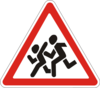
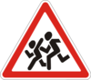
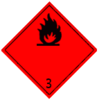
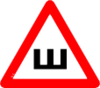

30. Номерные, опознавательные знаки, надписи и обозначения
На трамваях и троллейбусах наносятся регистрационные номера, присваиваемые соответствующими уполномоченными на то органами.
Запрещается изменять размеры, форму, обозначение, цвет и размещение номерных знаков, наносить на них дополнительные обозначения или закрывать их, они должны быть чистыми и достаточно освещенными.
- а) «Автопоезд» – три фонаря оранжевого цвета, расположенные горизонтально над передней частью кабины (кузова) с промежутками между фонарями от 150 до 300 мм – на грузовых автомобилях и колесных тракторах (класса 1.4 т и выше ) с прицепами, а также на сочлененных автобусах и троллейбусах;
- б) «Глухой водитель» – круг желтого цвета диаметром 160 мм с нанесенными внутри тремя черными кружками диаметром 40 мм, расположенными по углам воображаемого равностороннего треугольника, вершина которого обращена вниз. Знак размещается спереди и сзади на транспортных средствах, которыми управляют глухие или глухонемые водители;
-
в)
 «Дети»
– квадрат желтого цвета с каймой красного цвета и черным изображением символа дорожного знака

1.33
(см. приложение 1) (сторона квадрата –
не менее 250 мм,
кайма –
1/10
этой стороны). Знак размещается спереди и сзади на транспортных средствах, перевозящих организованные группы детей;
«Дети»
– квадрат желтого цвета с каймой красного цвета и черным изображением символа дорожного знака

1.33
(см. приложение 1) (сторона квадрата –
не менее 250 мм,
кайма –
1/10
этой стороны). Знак размещается спереди и сзади на транспортных средствах, перевозящих организованные группы детей;
-
г)
«Длинномерное транспортное средство»
– два прямоугольника желтого цвета размером
500 х 200 мм
с каймой красного цвета шириной
40 мм
из светоотражающего материала. Знак размещается на транспортных средствах (кроме маршрутных) сзади горизонтально (или вертикально) и симметрично относительно продольной оси, длина которых
от 12 до 22 м.
Длинномерные транспортные средства, длина которых с грузом или без него превышает 22 м, а также автопоезда с двумя и более прицепами (независимо от общей длины) должны иметь размещенный сзади опознавательный знак (в форме прямоугольника желтого цвета размером 1200 х 300 мм с каймой красного цвета шириной 40 мм ) из светоотражающего материала. На знак черным цветом наносится изображение грузового автомобиля с прицепом и указывается их общая длина в метрах;
-
ґ)
 «Инвалид»
– квадрат желтого цвета со стороной
150 мм
и черным изображением символа таблички
«Инвалид»
– квадрат желтого цвета со стороной
150 мм
и черным изображением символа таблички
 7.17
(см. приложение 1). Знак размещается спереди и сзади на механических транспортных средствах, которыми управляют водители-инвалиды;
7.17
(см. приложение 1). Знак размещается спереди и сзади на механических транспортных средствах, которыми управляют водители-инвалиды;
- д) «Информационная таблица опасного груза» – прямоугольник оранжевого цвета размером 400 х 300 мм (300 х 120 мм) с каймой черного цвета (ширина – 15 мм ( 10 мм ), в верхней части которого указывается идентификационный номер вида опасности, в нижней – идентификационный номер опасного вещества по перечню ООН. Знак размещается со всех сторон на транспортных средствах, перевозящих такое вещество;
- е)  «Знак опасности» – ромб со стороной 250 мм, изображение которого должно отвечать классу опасного вещества (в соответствии с Европейским соглашением о международной дорожной перевозке опасных грузов). Знак размещается по бокам и сзади на транспортных средствах, перевозящих такое вещество;
- є) «Колонна» – квадрат желтого цвета с каймой красного цвета, в который вписана буква «К» черного цвета (сторона квадрата – не менее 250 мм, ширина каймы - 1/10 этой стороны). Знак размещается спереди и сзади на транспортных средствах, движущихся в колонне;
- ж) «Врач» – квадрат синего цвета (сторона – 140 мм ) с вписанным зеленым кругом (диаметр – 125 мм ), на который нанесен белый крест (длина штриха – 90 мм, ширина – 25 мм ). Знак размещается спереди и сзади на автомобилях, принадлежащих водителям-врачам (с их согласия). Если на транспортном средстве размещен опознавательный знак «Врач», в нем должна быть специальная медицинская аптечка и инструментарий по перечню, определенному МОЗ, для оказания квалифицированной помощи при дорожно-транспортном происшествии;
- з) «Негабаритный груз» – сигнальные щитки или флажки размером 400 х 400 мм с нанесенными по диагонали красными и белыми чередующимися полосами (ширина – 50 мм ), а в темное время суток и в условиях недостаточной видимости – светоотражателями или фонарями: спереди белого цвета, сзади – красного, сбоку – оранжевого. Знак размещается на крайних внешних частях груза, выступающего за габариты транспортного средства на расстояние, более чем это предусмотрено пунктом 22.4 данных Правил;
-
и)
«Ограничение максимальной скорости»
– изображение дорожного знака
 3.29
(см. приложение 1) с указанием разрешенной скорости (диаметр знака –
не менее 160 мм,
ширина каймы –
1/10
диаметра). Знак размещается (наносится) сзади слева на механических транспортных средствах, которыми управляют водители со стажем
до 2 лет,
тяжеловесных и крупногабаритных транспортных средствах, транспортных средствах, осуществляющих дорожную перевозку опасных грузов, в случае перевозки грузовым автомобилем пассажиров, а также в случаях, когда максимальная скорость транспортного средства согласно его технической характеристике или отдельным условиям движения, определенным Госавтоинспекцией, ниже установленной в пунктах
12.6
и
12.7
данных Правил;
3.29
(см. приложение 1) с указанием разрешенной скорости (диаметр знака –
не менее 160 мм,
ширина каймы –
1/10
диаметра). Знак размещается (наносится) сзади слева на механических транспортных средствах, которыми управляют водители со стажем
до 2 лет,
тяжеловесных и крупногабаритных транспортных средствах, транспортных средствах, осуществляющих дорожную перевозку опасных грузов, в случае перевозки грузовым автомобилем пассажиров, а также в случаях, когда максимальная скорость транспортного средства согласно его технической характеристике или отдельным условиям движения, определенным Госавтоинспекцией, ниже установленной в пунктах
12.6
и
12.7
данных Правил;
- і) «Опознавательный автомобильный знак Украины» – эллипс белого цвета с черной каймой и нанесенными внутри латинскими литерами UA. Длина осей эллипса должна быть 175 и 115 мм. Размещается сзади на транспортных средствах, находящихся в международном движении;
-
ї)
«Опознавательный знак транспортного средства»
– специальная лента из светоотражающей пленки с нанесенными под углом
45 градусов
чередующимися красными и белыми полосами. Знак размещается на транспортных средствах сзади горизонтально и симметрично относительно продольной оси как можно ближе к внешнему габариту транспортного средства, а на транспортных средствах, которые имеют кузов-фургон, – и вертикально. На транспортных средствах, используемых для дорожных работ, а также на средствах, имеющих особую форму, и на их оборудовании знак размещается также спереди и по бокам.
Опознавательный знак размещается обязательно на транспортных средствах, используемых для дорожных работ, а также на средствах, имеющих особую форму. На других транспортных средствах опознавательный знак размещается по желанию их владельцев;
- й) «Такси» – квадраты контрастного цвета (сторона – не менее 20 мм ), которые размещены в шахматном порядке в два ряда. Знак устанавливается на крыше транспортных средств или наносится на боковой их поверхности. При этом должно быть нанесено не менее пяти квадратов;
- к) «Учебное транспортное средство» – равносторонний треугольник белого цвета с вершиной кверху и каймой красного цвета, в который вписана буква «У» черного цвета (сторона – не менее 200 мм, ширина каймы – 1/10 этой стороны). Знак размещается спереди и сзади на транспортных средствах, используемых для обучения вождению (допускается установка двустороннего знака на крыше легкового автомобиля);
- л)  «Шипы» – равносторонний треугольник белого цвета с вершиной кверху и каймой красного цвета, в который вписана буква «Ш» черного цвета (сторона треугольника – не менее 200 мм, ширина каймы – 1/10 стороны). Знак размещается сзади на транспортных средствах, на которых установлены шины с шипами.